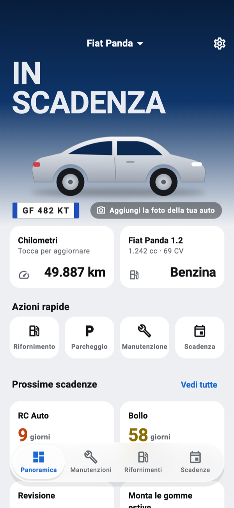
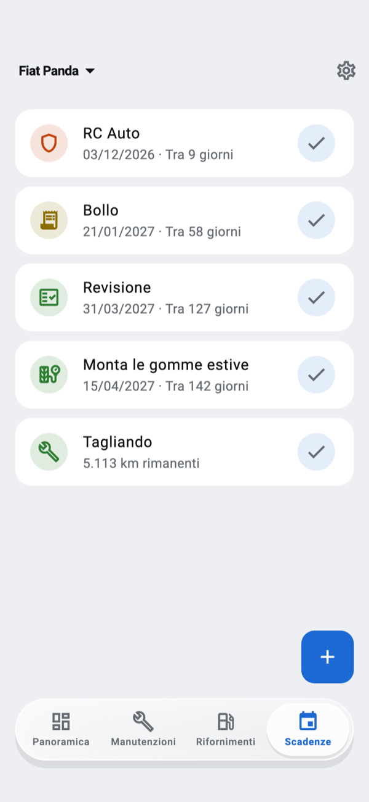
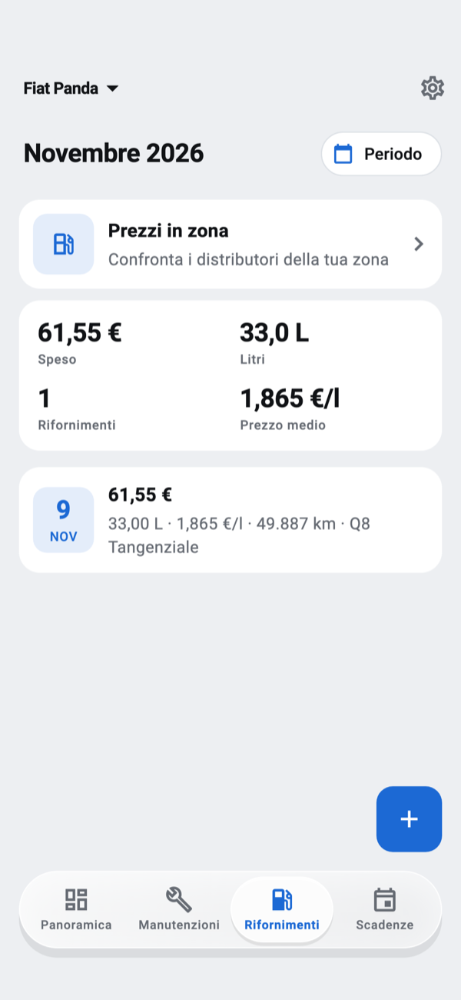
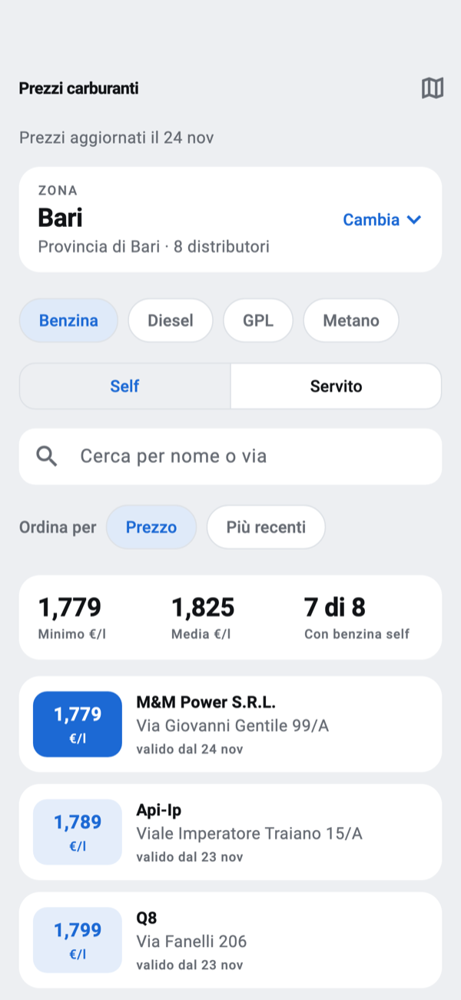

MyCar
Gratuita · senza account · senza pubblicità
Bollo, assicurazione, revisione e tagliando con gli avvisi prima della scadenza. Rifornimenti e consumi, manutenzioni, documenti dell'auto, prezzi dei carburanti vicino a te e dove hai parcheggiato. I dati restano sul tuo telefono.
Android 7 o successivo. Gli aggiornamenti arrivano dentro l'app.




Cosa fa
Scadenze
Bollo, RC Auto con i 15 giorni di tolleranza, revisione, tagliando a data o a km, gomme, patente. Più avvisi per scadenza.
Rifornimenti
Importo, litri o prezzo al litro: il terzo si calcola da solo. Spese del mese e consumi.
Prezzi carburanti
I prezzi del giorno dal Ministero, vicino a te o nel tuo comune, in elenco o sulla mappa.
Parcheggio
Salva dove hai lasciato l'auto, con piano e nota, e ritrovala con il percorso a piedi.
Manutenzioni e documenti
Interventi con officina, costo e foto. Libretto, assicurazione e patente sempre con te.
Widget
Scadenze, parcheggio, km e prezzi sulla schermata Home.
Installare su Android
- Tocca Scarica per Android qui sopra e apri il file MyCar.apk scaricato.
- Se il telefono lo chiede, consenti al browser o a «File» di installare app sconosciute, poi torna indietro e tocca Installa.
- Se Play Protect avvisa che l'app non è nota, tocca Altri dettagli › Installa comunque: MyCar non è sul Play Store, per questo non la conosce.
Gli aggiornamenti piccoli arrivano da soli: l'app ti dice «Riavvia per aggiornare». Per una versione nuova completa torna su questa pagina.
Installare su iPhone
MyCar non è sull'App Store: su iPhone si installa con SideStore, gratuito, con il tuo Apple ID. La prima volta serve un computer; poi ogni 7 giorni si rinnova dall'iPhone.
I tuoi dati
Nessun account e nessun server: veicoli, scadenze, foto e documenti restano sul telefono. Fai ogni tanto il backup dalle Impostazioni dell'app e salvalo su iCloud o Drive: se cambi telefono, con quel file ritrovi tutto.